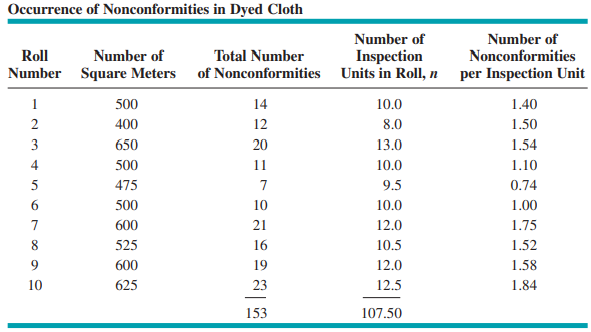

결점수 관리도는 제품의 일정단위 중에 니타나는 결점수를 관리하는 데 사용된다. 제품에 따라서는 약간의
결점이 있어도 불량으로 처리되지 않고 사용 가능한 경우가 있다. 예를 들면 강판이나 직물의 경우 일정 단위
면적당 약간의 스크래치가 있어도 사용할 수 있을 것이다. 일정단위당 결점수 관리에는 c 관리도가 사용되고,
단위가 변하는 경우에는 u 관리도가 사용된다. 일정단위당 결점수는 포아송 분포를 따른다고 알려져 있다.
그 확률분포는 다음과 같다.
샘플의 크기가 같은 경우 c 관리도와 u 관리도는 동일한 모습을 보인다. 단지 샘플단위의 차이만 있기 때문이다.
그러나 u 관리도의 경우는 1 단위당 결점수를 구하므로 샘플의 크기가 변해도 관리도를 구할 수 있다.
샘플의 크기가 변하는 경우의 u 관리도를 구해보자. Table-7의 데이터는 염색공정에서 나오는 데이터이다. 염색
불량을 검사하기 위해 매 50m2마다 검사를 하여 결점수를 측정한다. Table-7의 1열은 옷감이 말려 있는
롤러 번호, 2열은 롤러에 말려있는 옷감의 면적(m2), 3열은 롤러당 발생한 결점수, 4열은 롤러당 검사
횟수, 5열은 롤러에서 검사당 결점수를 나타낸다. 1행의 값을 설명하면, 롤러1의 직물면적은 500 m2
이므로 10번의 검사가 이루어진다. 이 롤러에서 총 결점수는 14개 이므로 검사횟수당(즉, 50m2 당)
1.4개의 결점수가 되는 것이다.
Table 7 샘플 크기가 변하는 결점수 데이터(Introduction to Statistical Quality Control
, D.C. Montgomery)
